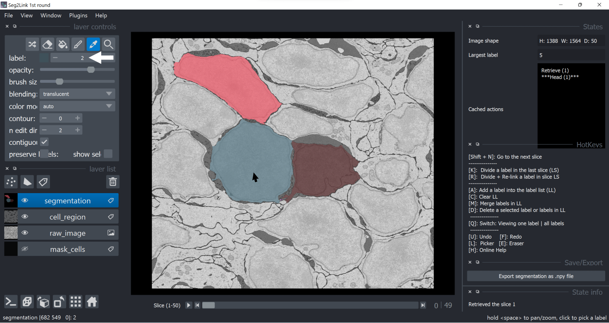
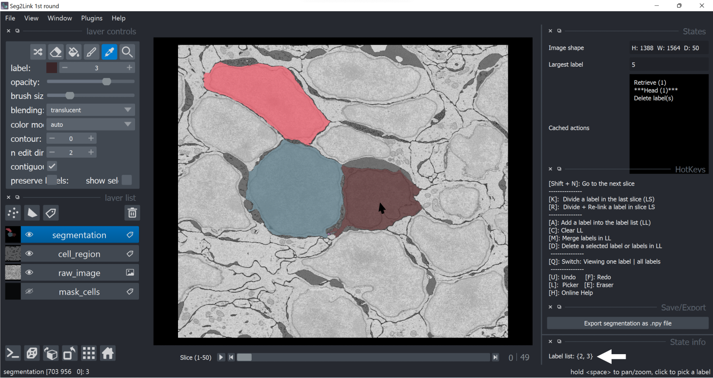
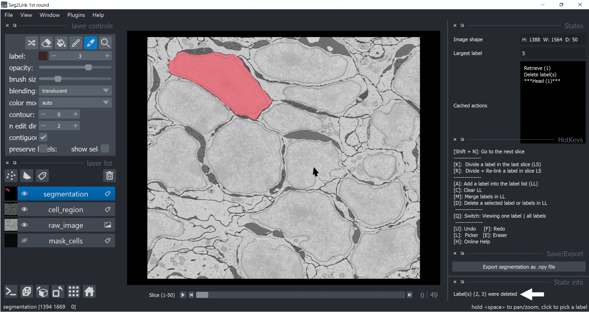

Delete
Delete a single cell
-
Select a cell in Pick Mode.

-
Press D to delete the selected cell.

Delete multiple cells
-
Select multiple cells and add them into the label list (See procedures 1 and 2 in Merge section)

-
Press D to delete the cells in the label list.

Note: To clean the label list before applying merge, press C.